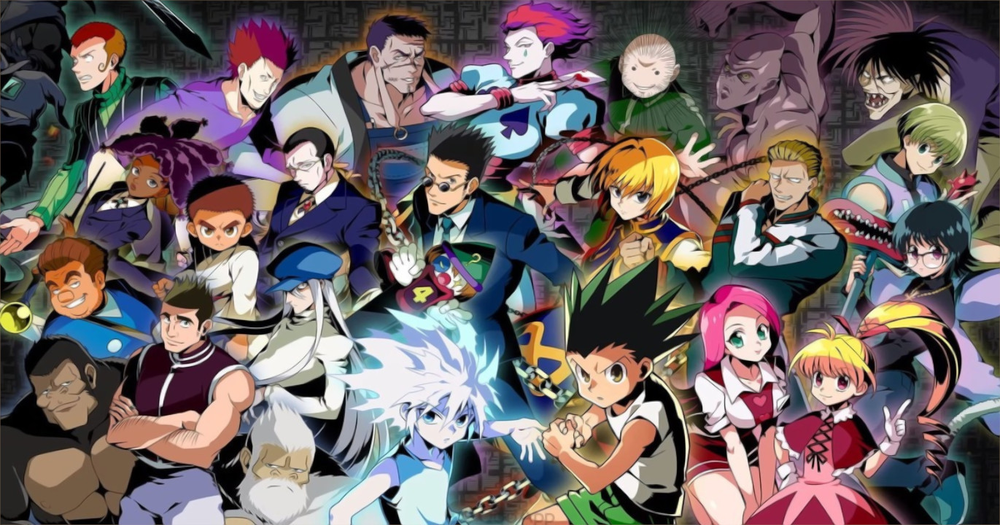

Post #1
A série conta a história de Gon Freecs, um garoto de 12 anos que pretende se tornar um Hunter, um caçador de tesouros, lugares perdidos e criaturas estranhas. Contudo, ao contrário da maioria dos Hunters que procuram fama e dinheiro, o herói da história tem uma motivação maior para querer ser um caçador – encontrar seu pai – um dos mais famosos hunters do mundo. Mas não é qualquer um que pode se tornar um Hunter. Para poder praticar essa reconhecida profissão, é necessário ter uma licença especial – e para tirá-la é preciso passar – e sobreviver – a exames com milhares de inscritos. Uma vez aprovado e com sua licença Hunter em mãos, o caçador passa a ter direito a acessar áreas restritas, informações secretas e consegue acumular facilmente uma grande fortuna de acordo com seus feitos ? incluindo ir atrás de Hunters que usam seus poderes para objetivos escusos.